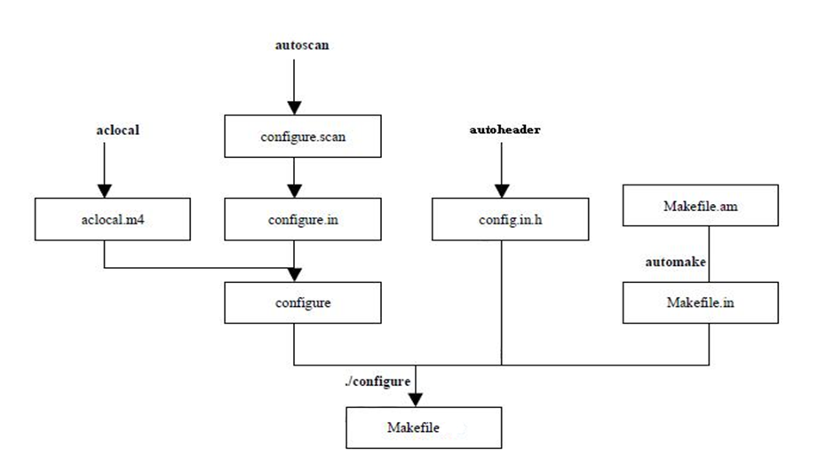

初学autotools
为什么需要autotools
Makefile固然可以帮助make完成它的使命，但要承认的是，编写Makefile确实不是一件轻松的事，尤其对于一个较大的项目而言更是如此。 那么，有没有一种轻松的手段生成Makefile而同时又能让我们享受make的优越性呢？ 本节要讲autotools系列工具正是为此而设的，
- autotools只需用户输入简单的目标文件、依赖文件、文件目录等就可以轻松地生成Makefile
- autotools还可以完成系统配置信息的收集，从而可以方便地处理各种移植性的问题。
也正是基于此，现在Linux上的软件开发一般都用autotools来制作Makefile。
什么是autotools
综上所述, autotools主要就是利用各个工具的脚本文件以生成最后的Makefile. autotools并不是一个工具, 而是一系列工具合集. 主要有:
- autoscan
- aclocal
- autoconf
- autoheader
- automake
autotools怎么使用
autotools安装
mac下包管理习惯使用homebrew
安装autoscan && autoconf
brew install autoconf
安装aclocal && automake && autoheader
brew install automake
autotools
在代码当前目录下执行autoscan, 生成configure.scan. configure.scan重命名为configure.ac. 并做以下修改:
- 初始化ACINIT
- 初始化AMINITAUTOMAKE
- 设定ACCONFIGFILES
# -*- Autoconf -*- # Process this file with autoconf to produce a configure script. AC_PREREQ([2.69]) #1. _初始化AC_INIT 和 初始化AM_INIT_AUTOMAKE_ AC_INIT(hello,1.0,377133665@qq.com) AM_INIT_AUTOMAKE(hello,1.0) #AC_CONFIG_SCRDIR来侦测源码文件是否存在, 来确定源码目录的有效性 AC_CONFIG_SRCDIR([main.cpp]) AC_CONFIG_HEADERS([config.h]) # Checks for programs. AC_PROG_CXX # Checks for libraries. # Checks for header files. AC_CHECK_HEADERS([stdlib.h unistd.h]) # Checks for typedefs, structures, and compiler characteristics. # Checks for library functions. #2. _生成makefile_ AC_CONFIG_FILES([Makefile]) AC_OUTPUT
- 执行aclocal命令. 扫描configure.ac文件生成aclocal.m4文件. 该文件主要处理本地宏定义. 它根据已经安装的宏、用户定义宏和 acinclude.m4 文件中的宏将 configure.ac 文件需要的宏集中定义到文件 aclocal.m4 中.
- 执行autoconf.这个命令将 configure.ac 文件中的宏展开，生成 configure 脚本。 这个过程要用到aclocal.m4中定义的宏. 如果configure.ac宏定义改变了, 需要重新执行aclocal命令
- 执行autoheader.该命令生成 config.h.in 文件。该命令通常会从 "acconfig.h” 文件中复制用户附加的符号定义。该例子中没有附加的符号定义, 所以不需要创建 "acconfig.h” 文件。
创建Makefile.am文件.Automake工具会根据 configure.in 中的参量把 Makefile.am 转换成 Makefile.in 文件。最终通过Makefile.in生成Makefile文件，所以Makefile.am这个文件非常重要，定义了一些生成Makefile的规则
AUTOMARK_OPTIONS = foreign bin_PROGRAMS = hello hello_SOURCES = main.cpp
- 执行automake –add-missing命令。该命令生成 Makefile.in 文件。使用选项 "–add-missing" 可以让 Automake 自动添加一些必需的脚本文件。如果发现一些文件不存在，可以通过手工 touch命令创建
- 执行./configure。大部分linux软件安装都先需要执行./congigure，然后执行make和make install命令。 ./congigure主要把 Makefile.in 变成最终的 Makefile 文件。configure会把一些配置参数配置到Makefile文件里面。
- 执行make
mac系统gcc与g++默认下都是clang的别名. 所以有可能会在此处产生错误.实际上并没有发现不同 - 执行make install
autotools流程图
dot流程图源码 